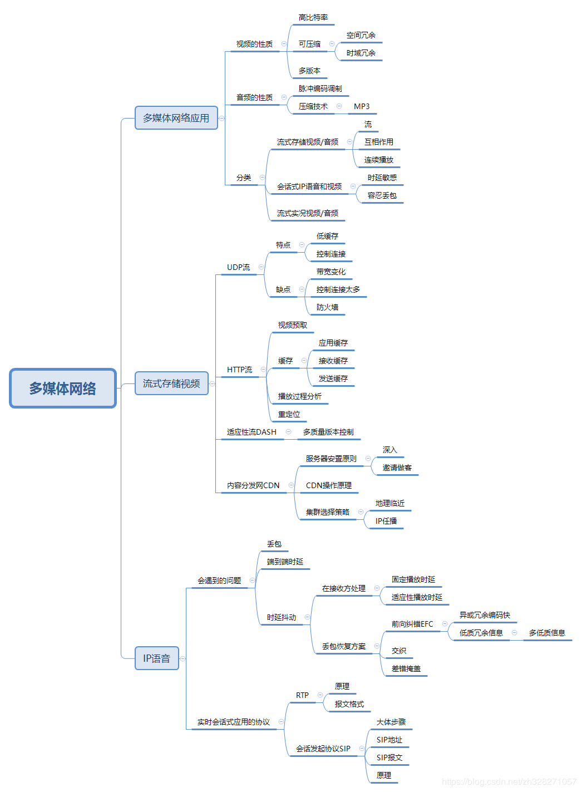

一、多媒体网络应用
1.1视频的性质
- 高比特率:视频最主要的特点就是极大地数据量,由此产生的高比特率的传输
- 可压缩:为了稍微减少传输的数据量,由此产生了压缩技术,比如会对空白区域进行处理或者由于视频一般具有较多的重复,由此来压缩视频
- 多版本:在服务器上放置不同版本不同质量的文件.
1.2音频的性质
1.3多媒体应用的分类
多媒体应用主要可以分为以下几类:
- 流式存储视频/音频:流是一种在选定播放时间点后可以直接播放而不用储存所有的数据再进行播放的一种技术.所以流式视频/音频可以进行暂停,重新定位等操作.而为了使视频/音频连续的播放,接收方必须不停接收数据,否则就会暂停播放.比如优酷,bilibili提供的一些非直播的视频.
- 会话式视频/音频:不同于流式存储视频/音频,这种方式是即时播放的.所以对时延的敏感性很高,有允许一些丢包,一般来说可以忍受.比如电话语音
- 流式实况视频/音频:应用的技术同流式存储视频/音频是一样的,只不过更加的注重实时播放,类似于电视直播那样,比如直播.
二.流式存储视频
流式存储视频同音频的区别不大,主要是比特率大小的区别,介绍流式存储技术就用视频来介绍.每个视频都被放置在服务器上,并具有特定的URL地址.客户端一般都通过URL来请求特定的视频.而流式存储视频又分为三种:UDP流,HTTP流,适应性DASH流,三者具有相同的特性,他们都会在客户端拥有缓存以对抗延迟和丢包,当然也具有一些不同的特点.以下做简要的描述
2.1、UDP流
UDP流即使用UDP协议来传输视频数据,它具有的特点就是实时性,不像HTTP协议会被拥塞控制功能所控制速度.可以以最大的速度传输.也因为此,UDP流容易受到带宽变化所带来的影响.此外,使用UDP流需要额外的控制连接来控制视频的暂停,重定位等功能.由此也会给服务器带来额外的巨大消耗.最后,大量的UDP传输可能会被防火墙干掉.
2.2、HTTP流
HTTP流则不同于UDP流,主要使用HTTP协议.第一个特点即使拥有视频预取机制,即比如当前播放的视频需要1k的带宽,但是服务器传输时却回传输更大的带宽(如果线路允许的话),以此在客户端更多的缓存数据,以此对抗网速的变化或者拥塞控制等因素.
HTTP流也不仅拥有客户端的应用缓存,还拥有接收缓存,和发送缓存,发送缓存在服务器中.以下是概念图:
黑色的代表已使用的缓存空间.当应用缓存存储满时,他会立即通知接收缓存,接着通知发送缓存,此时服务器变不会再发送数据了,相反,如果应用缓存缓存的数据别使用完了,即当前已经没有可以播放的缓存是,就会陷入暂停,直到接收到一定数量的缓存后,才可以继续播放.
HTTP流也具有重定位的功能,这是通过对视频文件指定固定地址的字节来实现的.
2.3、适应性DASH流
因为各个用户的带宽大小不同,所以会在服务器上放置多种不同质量的视频文件,和一个告示文件,告示文件为每个视频映射一个URL地址,即可让用户得到不同质量的视频,
2.4、内容分发网CDN
以上即使流式存数视频技术的不同类型,但是,视频都会被放置在服务器上,内容分发网即使管理这些视频的网络.
一般的,这些服务器都是几个及其巨大的服务器集群.他们会邀请ISP接入以使用户获取希望获取的数据.
那么CDN是如何管理如此大量的视频的呢?CDN会借用DNS来截获和重定向请求.以下是步骤图:
首先,用户进入视频网站,比如优酷等等,接着发送报文指定希望获取的视频,DNS服务器则会请求权威DNS服务器以获取储存视频的服务器,接着便请求此服务器以获得视频地址,最后,从指定服务器获取希望取得的视频.
三、IP语音
3.1 IP语音遇到问题
前文已经讲过,由于会话式使用UDP(基本上使用UDP,有个例)来传输数据,所以会遇到丢包的问题,以及长时间的端到端时延,所以,如果在规定是时间内没有接受到包,此包就会被永远丢弃,而不再使用.
IP语音还会遇到时延抖动的问题,即即使里在服务器,两个包是连续发送的,但是在接收方,他们可能是不连续到达的(路径不同,排队等因素),如果不做处理,就会播放出难以理解的内容.在接收方和发送方都可以进行一定的处理接收方:
可以固定播放时延,即在固定的时间后播放此数据.发送的包中添加发送时的时间戳,接收方接收后,如果此时已在固定播放的时延之后,此包就会被丢弃,不在播放,
发送方:
我们可以在发送前对包进行前向纠错EFC,比如把同一数据放入连个连续的包中,这样,即使丢了一个包,也可以通过另一包来恢复数据,或者在发送高质量数据的同时,在发送一段低质量的数据,当高质量包丢失或时延过高是,使用低质量的数据.也可以使用交织技术,主要原理是打乱包中数据的排序,这样,丢失了某个包后,因为是间歇性的丢失,因此对使用的影响较小
3.2、RTP协议
即VoIP所使用的协议,一般运行在UDP协议之上.主要功能就是进行会话式语音/视频的传输.下图是报文结构:
- 有效载荷类型:编码类型,比如音频可能就是PCM.
- 序号:用于检测丢包和恢复分组
- 时间戳:用于消除时延抖动
- 同步源标识符SSRC;表示了RTP流的源,一般来说,RTP会话中的每个流都有不同的SSRC值
3.3、会话发起协议SIP
主要功能是提供在呼叫者和被呼叫者经IP网络之间建立连接的功能.,连接的建立类似于三次握手,如下图:
SIP报文如下:

类似于SMTP协议,也有from和to首部行,Call-ID唯一标志此呼叫,也有描述类型和大小的首部行.
SIP地址不仅仅可以是如上图中的bob@xx.xx.xx.xx,也可以邮箱地址或者手机号,这可以通过使用特殊的设备实现.
因为通过SIP地址来建立连接,而IP地址有可能是动态变化的,所以就需要使用到SIP代理和SIP注册器.
每个SIP用户都用相关联的SIP注册器,每当用户切换到新设别时,就会想SIP注册器注册新的IP地址.下图就是其作用机制:

呼叫者发送报文该SIP代理,指明希望呼叫的对象,SIP带了则向SIP注册器发送报文,说明希望获取的被呼叫者的SIP地址所对应的IP地址,如果此SIP注册器没有,就会返回报文,说那个SIP注册器拥有此映射,接着,SIP代理访问另一个SIP注册器,另一个SIP注册器接收到报文后,通知被呼叫的客户,别呼叫者通过以上链路返回一个报文,此时呼叫者和被呼叫者之就建立起了一次呼叫了.
本章思维导图
